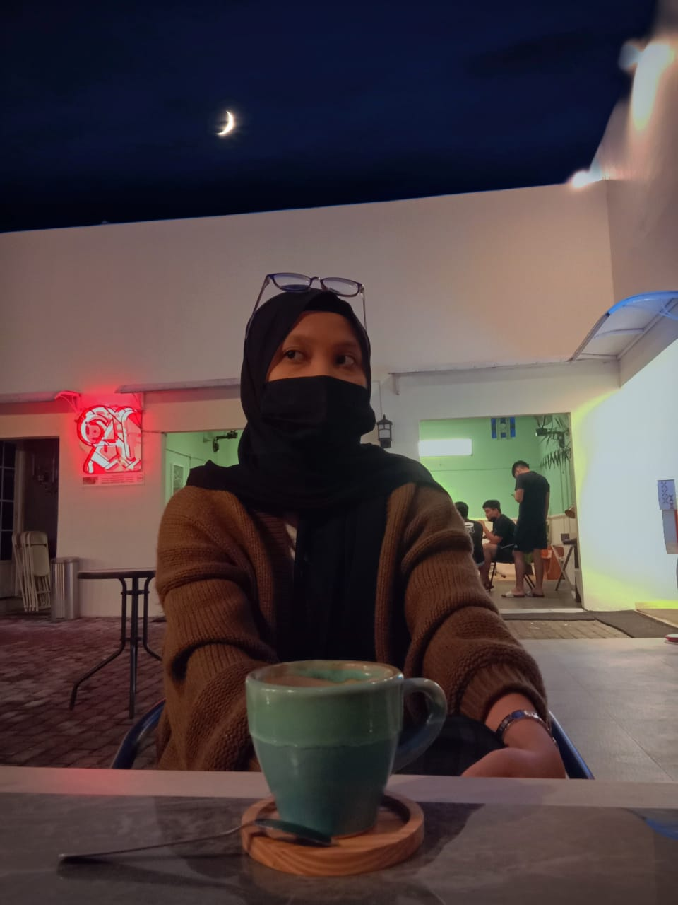

| DATA DIRI | KETERANGAN | FOTO |
| Nama | Disa Naufal Rifqi | |
| Tempat/Tanggal Lahir | Banyumas, 30 Mei 2001 | |
| Alamat | Perum Griya Alam Sentosa A 21A no.8 Cileungsi, Jawa Barat | |
| Agama | Islam | |
| Jenis Kelamin | Laki-laki | |
| Hobi | Main game | |
| Cita-Cita | Ingin di atas tetapi menghadap ke bawah | |
| Akun Sosial Media | IG : @disa.naufal |
| DATA DIRI | KETERANGAN | FOTO |
| Nama | Ditya Huzmi Safira |  |
| Tempat/Tanggal Lahir | Banyumas, 31 Agustus 2000 | |
| Alamat | Ajibarang Wetan, RT 01 RW 10, Ajibarang | |
| Agama | Islam | |
| Jenis Kelamin | Perempuan | |
| Hobi | Menari | |
| Cita-Cita | Pengusaha & MC terkenal yang bisa keliling dunia hehe aamiin :) | |
| Akun Sosial Media | IG : @dityarubyjane |
| DATA DIRI | KETERANGAN | FOTO |
| Nama | Abdur Rias Sufi | |
| Tempat/Tanggal Lahir | Banyumas, 28 Mei 2001 | |
| Alamat | Jl Setia Bakti Gg 2 No. 10 Kota Pekalongan | |
| Agama | Islam | |
| Jenis Kelamin | Laki-laki | |
| Hobi | Bulu Tangkis | |
| Cita-Cita | TNI | |
| Akun Sosial Media | IG : @abduriasufi |
| DATA DIRI | KETERANGAN | FOTO |
| Nama | Ardhella Rachmadani | |
| Tempat/Tanggal Lahir | Cilacap, 02 Desember 2000 | |
| Alamat | Perum BKD blok 36 C.220 | |
| Agama | Islam | |
| Jenis Kelamin | Perempuan | |
| Hobi | Desain | |
| Cita-Cita | Jadi orang sukses | |
| Akun Sosial Media | IG : @ardhelard |